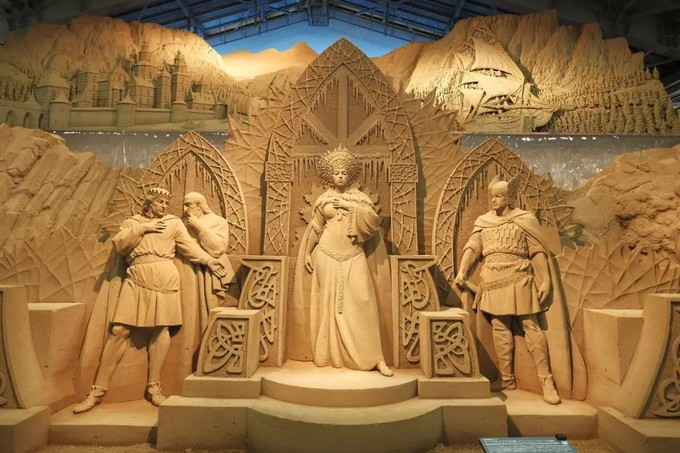
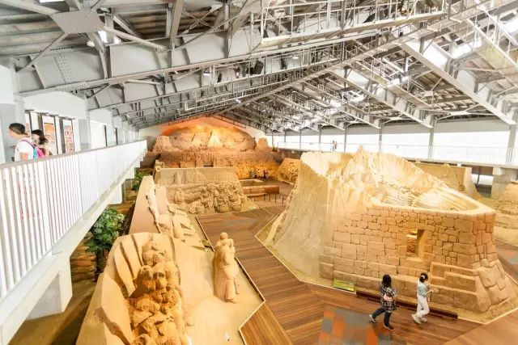
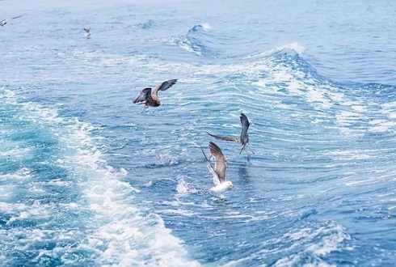
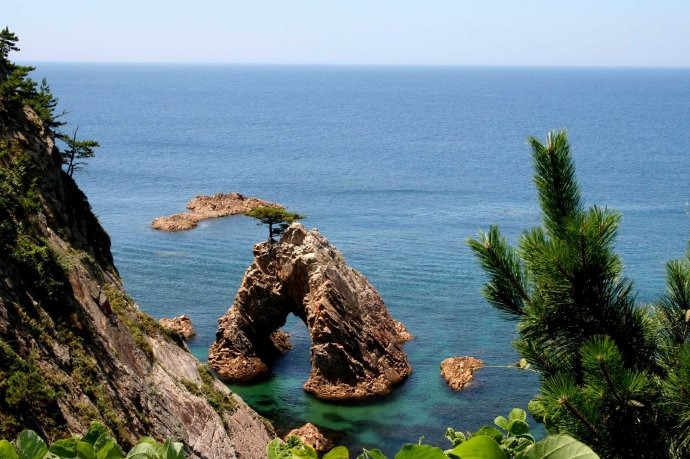
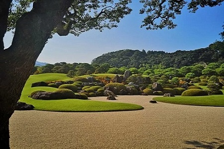
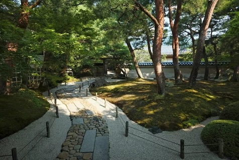
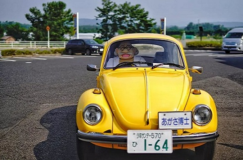
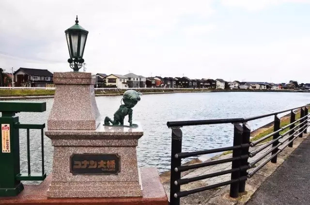

morly旅游网
一说日本，你肯定想到了北海道无敌雪景，想过去鸟取沙丘上眺望日本海吗？
相比东京、京都大阪奈良、北海道、冲绳甚至九州的熊本，鸟取县实在是一个太冷门的地方。但柯南粉应该对这里不会陌生，除了作者青山刚昌出生在鸟取县，早些年柯南里有个案子《鸟取县蜘蛛公馆的怪事》质量也挺高。
鸟取县，日本43县之一。鸟取县位于日本列岛本岛西部、中国地区的东北部，东西长约120公里，南北长约20至50公里，呈东西狭长地势。北面朝日本海，有著名的鸟取沙丘，延绵着白砂青松的海岸线，南部有中国地区最高的山峰大山，以及其他一些中国山地延绵不绝。如果说鸟取县和中国有什么关系的话，只能说鸟取县和河北省是友好省县，之前看介绍，鸟取县有个燕赵园，据说就是河北来的设计师设计的清朝皇家风格的园林。
鸟取县紧邻日本海，这里有着日本唯一的沙漠——鸟取沙丘。当你费尽力气爬上落差达90米高的沙丘顶端，极目四眺，便能在一瞬间体会到海风拂面、浪声入耳的感觉。而除了沙丘景致以外，鸟取沙丘还有各种游乐活动，比如骑骆驼或坐马车观光、乘坐滑翔伞、滑沙等。这种感觉，就好比瞬间打开任意门去到了中东。
鸟取砂丘 砂之美术馆
鸟取砂丘长约16公里，宽约2.4公里，这个日本最大的砂丘是历经10万年创作出来的大自然杰作。砂丘上有深达40米的凹地，也有高达50米的丘陵，有被强风吹出的称为“风纹”的图案，这些壮美的砂丘变化无常，一刻不停。步行下到海岸线，可以欣赏到一望无边的大海与砂丘融为一体的雄伟广阔的景观。除砂丘景致以外，还有各种游乐活动，或骑在充满异国情调的骆驼上，或乘坐滑翔伞。毗邻鸟取砂丘的“砂之美术馆”是全球唯一的室内沙雕美术馆。每年都会改变作品主题，美术馆内的沙雕作品只能存在于有限的时间内。如此般拥有一份不能永存下去的美，也是沙雕艺术的一大魅力。
 浦富海岸
浦富海岸是日本的名胜和天然纪念物，并且被评为“日本百景”。因其景观和宫城县松岛颇为相似，因此又有“山阴的松岛”之称。海岸东部是沙滩海岸，在夏季是海水浴场。除了白沙大海还有各种洞窟断崖等地形，乘坐游船可以近距离的接近干净透明的大海，除了能一边吹着海风一边欣赏广阔美丽的海岸线。最特别的要数喂海鸥体验，拿出备好的零食，海鸥看到便会熟门熟路的飞过来，和大自然超近距离的接触，自在舒畅！
 足立美术馆
足立美术馆是由实业家足立全康生前捐赠的收藏品而设立的美术馆。他去世前收藏了大量近代日本画、陶瓷器、雕刻艺术品等，其中有许多皆出自名家之手。此外足立美术馆还从日本全国各地收集松树和庭园石，对建造庭园倾注了巨大热情。宽大庭园内借景出云的群山建造了枯山水庭、苔庭、池庭、白沙青松庭等各种创意庭园，春天的杜鹃、夏天的深绿、秋天的红叶、冬天的雪景，四季展示不同的美丽光景，曾被美国的专业日本庭院杂志《The Journal of Japanese Gardening》连续13年评为日本庭院第一名。
 柯南小镇
如果你是名侦探柯南的粉丝，一定不要错过柯南小镇。作为《柯南》的作者青山刚昌的出生地，鸟取处处都用足了心思。从JR由良站到青山刚昌故乡馆，一路上都有关于柯南的身影，从出站就能看到的“柯南站”站牌到柯南电车。经过柯南大桥，米花商店街重现眼前，小兰和新一就在这里等你~而雕像旁边就是新一的家，门铃还会有柯南的应答声呢！街道的尽头就是青山刚昌故乡馆，纯白的建筑前摆放着阿笠博士的小汽车，里面展出了关于柯南的各种资料，柯南迷们一定不能错过这里！
 内容整理至网络，如有侵权，请联系我们！1255394075@qq.com